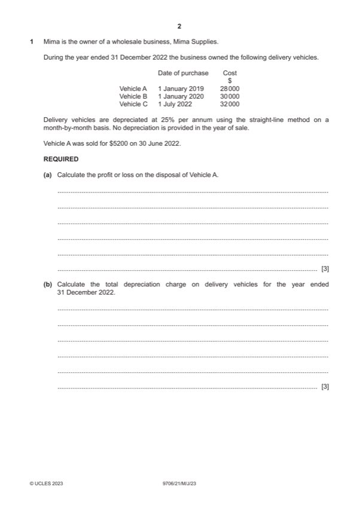

Question 1

Original paper page 2
Part 1(a) — solution
- Depreciation to date: 3 25% $28 000 = $21 000
- Net book value at time of sale: $28 000 – $21 000 = $7000 (1)
- $7000 – proceeds $5200 = $1800 (1) OF Loss (1)
Mark points
- Depreciation to date: 3 25% $28 000 = $21 000
- Net book value at time of sale: $28 000 – $21 000 = $7000 (1)
- $7000 – proceeds $5200 = $1800 (1) OF Loss (1)
Part 1(b) — solution
- $30 000 25% = $7500 (1)
- $32 000 25% ½ = $4000 (1)
Mark points
- $30 000 25% = $7500 (1)
- $32 000 25% ½ = $4000 (1)
Part 1(c) — solution
- W1 Cost of sales: $483 900 – understated inventory $4940 = $478 960(1)
- W2 Interest received: 10% $24 000 10/12 = $2000 (1)
- W3 Advertising: $6 580 – (1/3 $4200) = $5180(1)
- W4 Wages $63 480 + $1620 = $65 100 (1)
- (5% $31 300, i.e. $1565 – $1390 = $175 (1)
- ($36 800 – $18 200) 15% = $2790 (1)
Mark points
- W1 Cost of sales: $483 900 – understated inventory $4940 = $478 960(1)
- W2 Interest received: 10% $24 000 10/12 = $2000 (1)
- W3 Advertising: $6 580 – (1/3 $4200) = $5180(1)
- W4 Wages $63 480 + $1620 = $65 100 (1)
- (5% $31 300, i.e. $1565 – $1390 = $175 (1)
- ($36 800 – $18 200) 15% = $2790 (1)
Part 1(d) — solution
Explain the importance of making an allowance for irrecoverable debts in a 2
business’s financial statements.
To ensure that profits are not overstated (1) and asset values are not overstated
(1) to comply with the prudence concept.
Max 2
Accept other valid responses.
Mark points
- Include the ideas shown in the solution above.
Part 1(e) — solution
Identify two ratios which could be used to assess a business’s liquidity. 2
Current ratio (1)
Acid test ratio (1)
Mark points
- Include the ideas shown in the solution above.
Part 1(f) — solution
Advise Mima which option she should choose. Justify your choice by 7
considering both options.
Max 3 marks for Option A
Max 3 marks for Option B
Decision supported with a comment (1)
Option A (max 3)
Will improve the ratio (1)
But may result in stock outs (1)
May reduce customer choice (1)
Could result in lost sales and a loss of profits (1)
Option B (max 3)
May improve ratio if demand increases (1)
Profits could decrease because of cost of advertising (1)
Will increase in demand compensate for loss of revenue on each sale (1)
Will advertising campaign be effective? (1)
Accept other valid responses.
2023 Page 7 of 13
9706/21 Cambridge International AS & A Level – Mark Scheme May/June 2023
Mark points
- Include the ideas shown in the solution above.